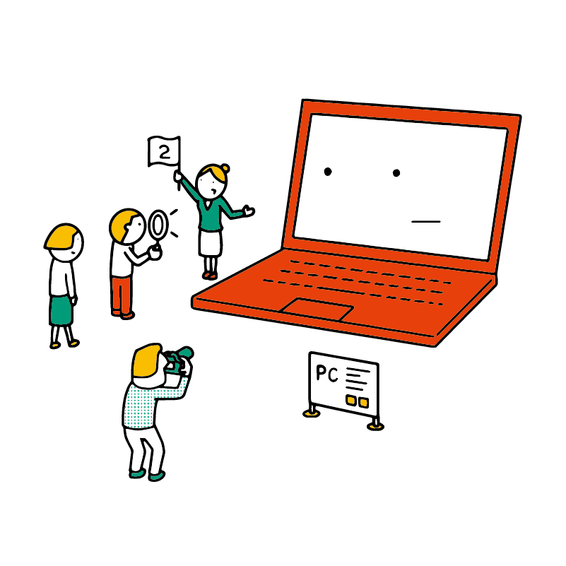
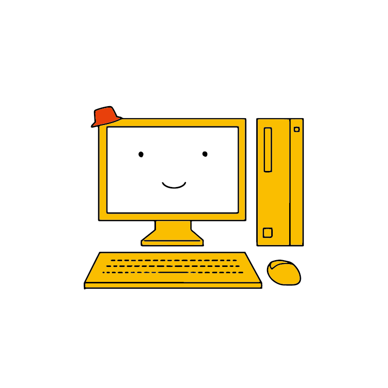
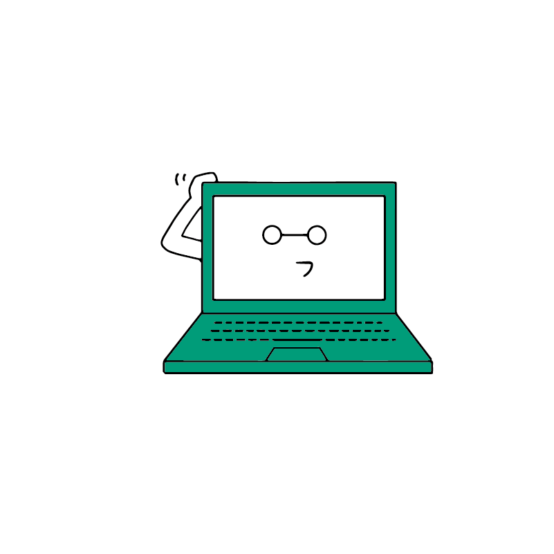
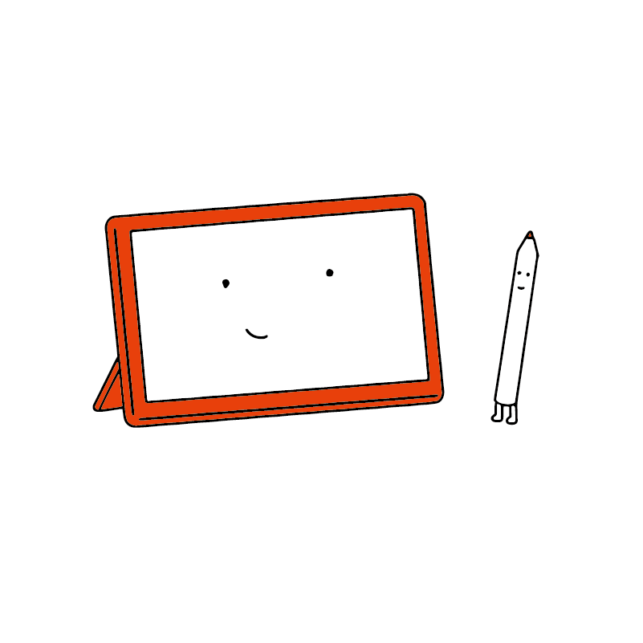
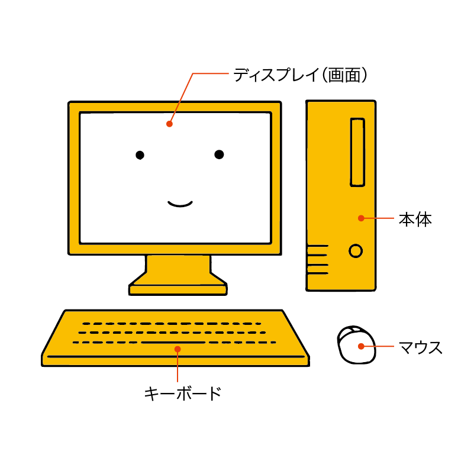
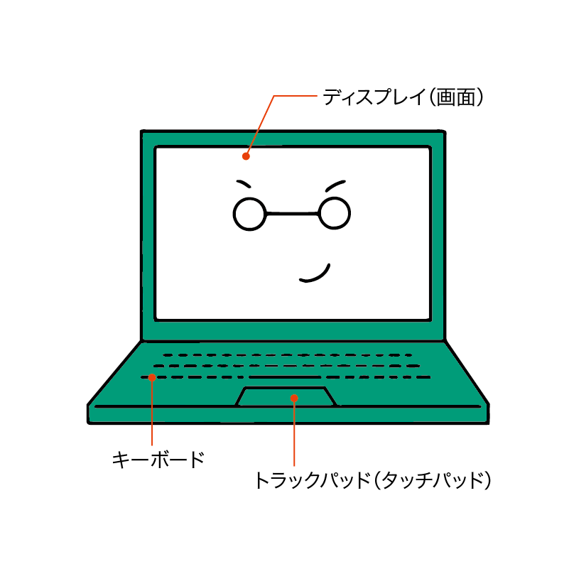

パソコンの種類を知ろう
パソコンにはいくつか種類があります。
パソコンの種類
形で分類すると、主に 3 種類に分けられます。
デスクトップパソコン
その名の通り、机（デスク）の上に置くためのパソコンで、基本的には持ち運びができないタイプです。
本体・画面・キーボードがそれぞれ分離しているものが主流ですが、本体と画面が一体化しているような製品もあります。
ゲーム向けやクリエイター向けなど、高性能なモデルも数多く用意されています。
ときどき、ディスクトップという表記がみられますが、これは誤りです。「机の上」を意味するので「デスクトップ」が正解です。「ディスクトップ」の場合、円盤（ディスク）の上にパソコンを置くことになってしまいます。
ノートパソコン
持ち運びができるパソコンです。 ひざ（英語でlap）の上に置いて使えることから、英語ではラップトップ（laptop）と言います。
持ち運びができるので、学校や出掛けた先で使う場合にも便利です。
最初に選ぶパソコンとして一番おすすめできるタイプです。
タブレットパソコン
タッチパネルで操作する、「大きなスマホ」ともいえるタイプのパソコンです。
注意が必要なのは、スマホを発展させたタブレット（iPad や Androidタブレット）と パソコンを発展させたタブレット（Windows タブレット） に分けられるという点です。 Windows タブレットであれば、パソコンとして使うことができます。しかし iPad や Android タブレットにはパソコン用のアプリを入れられません。
デスクトップパソコンの場合
デスクトップ型がパソコンの最も基本的なタイプなので、まずはこちらから見ていきましょう。
本体
ちょっと紛らわしいのですが、デスクトップパソコンの本体は画面ではなく 箱 のような部分です（ただし、画面と本体が一体化した製品もあります）。
パソコンの部品がここの中に格納されています。パソコンの電源を入れるときは、この本体にある電源ボタンを操作します。
ディスプレイ（画面）
本体から出力される映像が映し出されます。
ここにも電源ボタンがありますが、こちらを操作しても画面の電源がオン・オフされるだけで、PC 本体の電源は操作できません。
キーボード・マウス
キーボードやマウスを通じて入力します。
ノートパソコンの場合
ノートパソコンの場合、本体にディスプレイ・キーボード・マウスが一体化しています。
トラックパッド（タッチパッド）
ノートパソコンの場合、場所を節約するために「トラックパッド」や「タッチパッド」とよばれる装置がマウスの代わりに搭載されています。